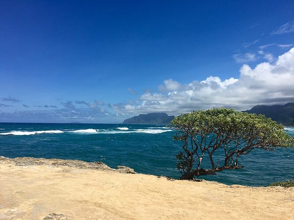
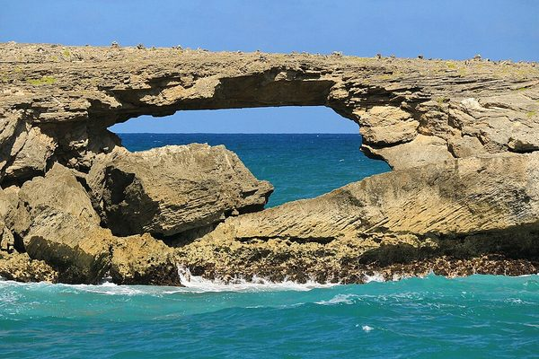

Laie Point
Laie Point is a rocky lookout on the edge of the island where the waves crash against the lava rock. On a clear day you can see small islands just offshore and the green mountains curving down the coast.
The ground is rough and the wind is strong, so wear good shoes and stay back from the edge. It is worth the trip for the colors of the water alone.


Photos: Wikimedia Commons, licensed CC BY-SA 2.0 and CC BY 2.0.